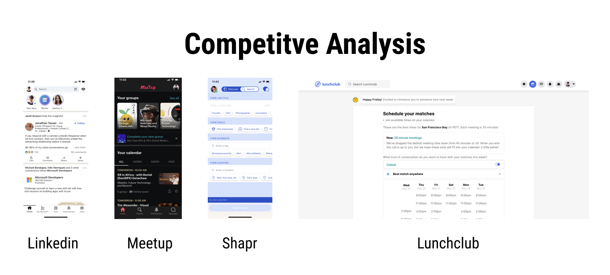

Straightening the path to success
New graduates and people transitioning from another field don't know how to begin a new career in tech.
I went through a detailed UX process of identifying this ongoing problem, conducting research, and creating a mobile solution.
This application aims to provide an intuitive user experience with a short, but empowering onboarding process, an optimized
search engine that quickly finds relevant communities and events, and a mentor and mentee system.
Project: Side project
Timeline: May, 2021
Role: Research, user interviews, ideation, wireframing, Hi-fidelity design, usability testing
Software: Figma, FigJam, Principle
Defining the Problem
"How do I get my foot in the door?"
New graduates and people transitioning from another field have no idea how to begin a career in tech. Often, they invest a lot
of time seeking answers by digging through online articles or trying to find experienced creatives who can give them clear direction.
Moreover, there is an abundance of online design and development communities filled with people with years of first-hand experience who want to educate and help new creatives get started in tech.
However, these communities are hidden from standard Google searches and must be found through a thorough search on social networking platforms or word-of-mouth.
Research Breakdown
Learning from the Users
I conducted an online survey with 40+ responses as well as competitive analysis to see how other apps are addressing this problem.


“I think just being new to the field - I'm seen as unproven or else with my legal background people wonder why I'm switching.”
Survery response
“My lack of experience in this field. I don't know what job routes I'm not exploring, or what questions are obvious that I'm not preparing for in interviews.”
Survey response
Ideation & Wireframing
Developing a visual strategy
To remain consistent with the user experience the interfaces was kept simple so users could quickly navigate from point A to B.
To compliment the product vision, a color palette of blue and orange accents portray trust and exploration. In addition,
strong Typography and a pixel-conscious layout, produced a clean mobile design.
The Solution
#01 - Onboarding
New users go through a quick onboarding process where they learn about the app and are required to address
their interests and career goals.
In theory, the app would use this information to recommend relevant resources that match a user's interests.
#02 - Explore
Users can explore online design and dev communities, events, and workshops through an optimized search engine.
#03 - Mentors
This feature wasn't originally a part of the user flow, but user feedback suggested it as they believed it could be another
resource found on the same app, without needing to use another platform.
"This feels like Linkedin and other networking apps combined into one simple app."
Tester feedback
"The experience flows well and it seems very resourceful. I would love to use an app like this."
Tester feedback
Conclusion
Reflection & future developments
This project improved my UI Design skills and my understanding of Apple's Human Interface Guidelines. In addition, I learned new
methods to acquire feedback and using it to develop visual solutions.
Overall, I was surprised at the approval this project received. I plan on designing and coding a marketing landing page to see if
this product could be viable in the market.